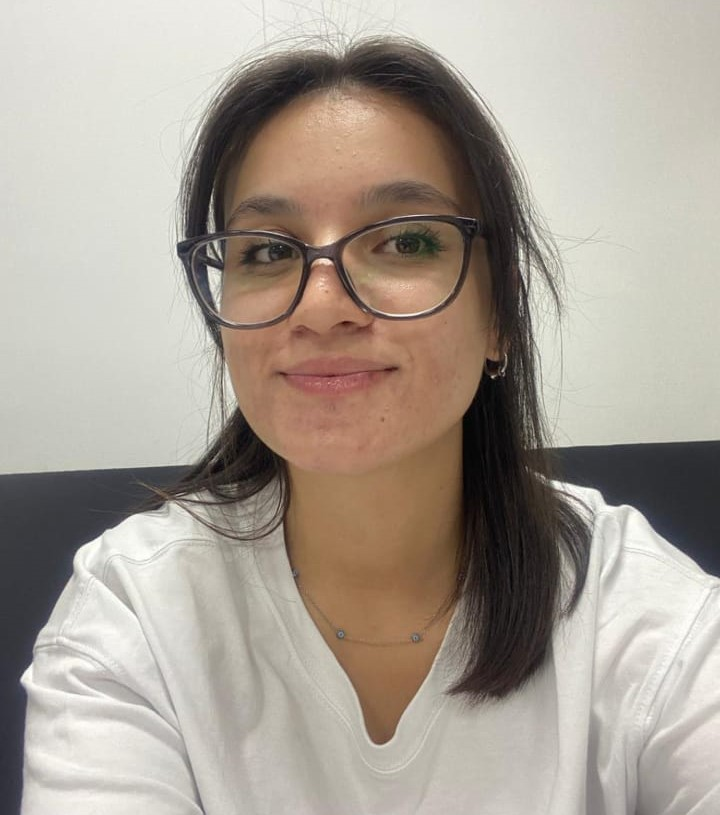

BLOĞUMA HOŞ GELDİNİZ
Merak Ettiğiniz Her Şey
Merhaba ben Arzu KÜÇÜK.
Süleyman Demirel Üniversitesi bilgisayar mühendisliği 3. sınıf öğrencisiyim.
Mühendislik okumak zor mu?
Tabiki mühendislik okumak zordur. Hele ki bilgisayar mühendisliğini okumak daha zordur. Ben kendimi geliştirmeyi yeni şeyler öğrenmeyi seviyorum bu yüzden bu bölümü tercih ederken zorlanmadım. Sürekli gelişen teknolojiler,internet,programlama,güvenlik,veritabanı,sistem ağ yönetimi,işletim sistemleri hepsinin birçok alanı ve bölümü var.
Bunların hepsini nasıl öğreneceğim?
Tabiki bunların hepsini kimse öğrenemez ben de öğrenemem. Benim yaptığım yanlışların en büyüğü birçok programlama dilini öğrenmeye çalışmak. Öncelikle bir alan seçip o alan üzerine çıkan yeni teknolojiler üzerine araştırmalar yapmak ve seçilen alan için kullanılan programlama dilini öğrenmek gerekir.
Alanımı nasıl belirleyeceğim?
Bir alan belirlemek bence en zoruydu. Bu yüzden seçebilmem tahmin ettiğimden biraz uzun sürdü.
2. sınıf yaz dönemimde Gazi Üniversitesi Eklemeli İmalat ve Araştırma Merkezinde zorunlu staj yaptım. Stajımdan önce kafam çok karışıktı. Çoğu dersler uygulamalı olarak gösterilmediği için ne yapacağımı, hangi alanı tercih edeceğimi bilmiyordum. Bu staj bana büyük katkılarda bulundu. Stajımı veri bilimi ve makine öğrenmesi üzerine yaptım. Stajımda ilk olarak python eğitimi gördüm. Daha sonrasında python kullanarak veri setleri üzerinde çalışmalar yaptım. Stajım sonunda veri bilimi ve makine öğrenmesi üzerinde ilerlemeye karar verdim. Şimdi çalışmalarıma devam ediyorum. Bu alanla ilgili projeler yapmak istiyorum. Amacım kendimi daha fazla geliştirmek.